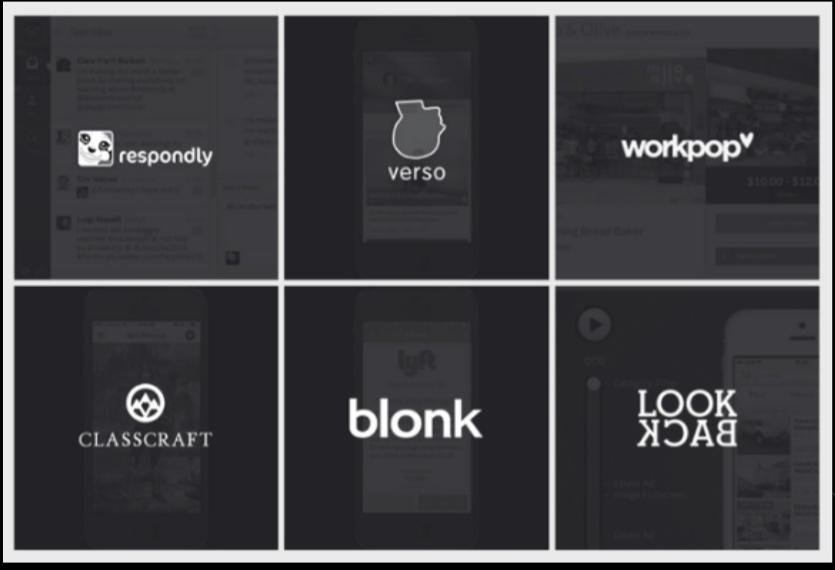
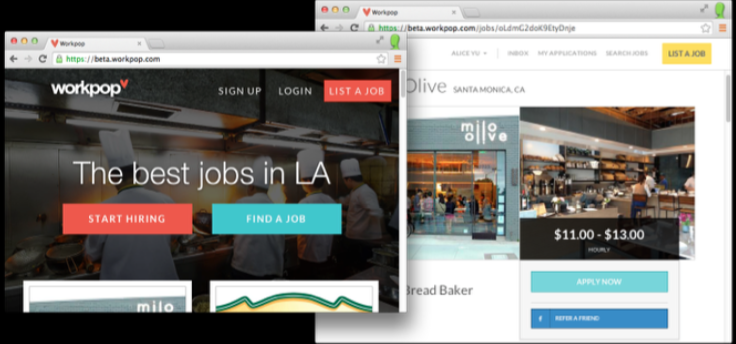
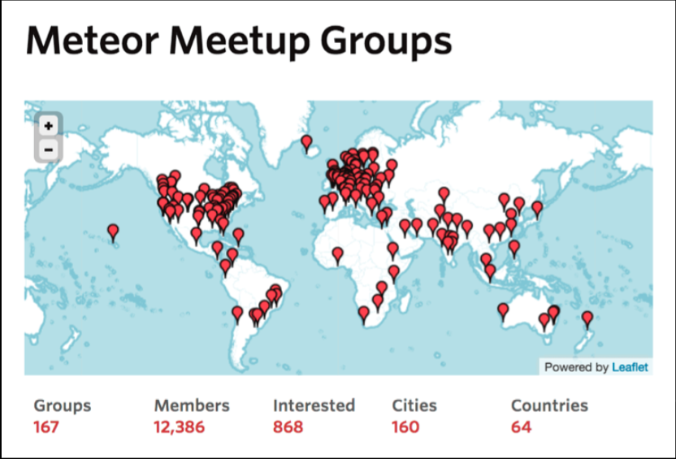

Meteor Intro
¿Que estamos haciendo?

1. Que es Meteor?
2. Demo
3. Starter Apps que puedes usar.
4. Recursos de Aprendizaje.
1. ¿Que es Meteor?
¿Que es Meteor?
- Es una plataforma para construir web y movil apps en Javascript.
- Construida para aprovechar la proxima generacion de Apps.
- Interfaces de Usuario enriquecidas.
- Aplicaciones multi-usuarios colaborativas.
- Listas para plataforma cruzada (web,movil).
- Desarrollo Rapido.
¿Como las apps modernas se ven y sienten?
- Enfocado en las caracteristicas unicas de tu app en lugar de agregar codigo de red, websocket, etc.
- Construida para aprovechar la proxima generacion de Apps.
- El objetivo de Meteor es: Crear Apps de la calidad de Facebook sin el dinero de Facebook...
Las herramientas antiguas no sirven para las apps modernas
- Las apps modernas sirven datos, no HTML.
- Las apps modernas no deberian tener un boton de Actualizar.
- Rail, Django, PHP, ASP, etc. son dificiles de adaptar al nuevo modelo.
2. Demo
Que los dioses de los demos esten entre nosotros...
Componentes
LiveQuery
Peticiones en tiempo real a la base de datos.
DDP
Suscribir a cambios en la base de datos.
MiniMongo
Ejecutar peticiones a la base de datos en el cliente.
Tracker
Re ejecuta funciones cuando los datos cambian.
Blaze
Conserva actualizada la vista con tus datos.
3. Starter Apps que puedes usar.
TODOs
Una App de lista de tareas
$# meteor create --example todos
Local Market
Una App Movil de fidelización
$# meteor create --example localmarket
4. Recursos de Aprendizaje.
Negocios construidos sobre Meteor

Workpop - Construido en Meteor

Levanto $7.9 MM en la Serie A liderado por Trinity Ventures
Creciendo Rapidamente
- Más de 150 Grupos de Meteor alrededor del mundo - meetup.meteor.com
- Más de 2000 paquetes creados por la comunidad - atmospherejs.com
- "Discover Meteor" ha hecho mas de US $300.000 en venta de libros (hasta Sept. 2014)
- Puntuado #11 en Github.
Grupos de meteor en el mundo.

Aprendiendo Meteor.
Meteor.com
meteor.com/learn
Tutorial oficial de Meteor.
meteor.com/install
Discover Meteor.
book.discovermeteor.com
EventedMind.
eventedmind.com
Stack Overflow, etiquetado Meteor.
Documentos oficiales de Meteor.
docs.meteor.com